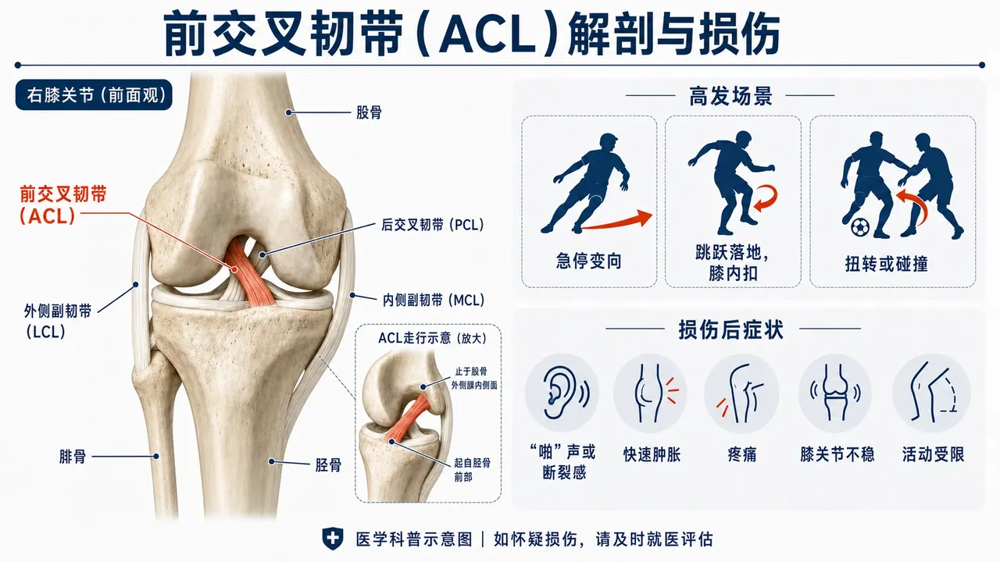

肿胀管理
抬高、医嘱允许的冷疗/加压、踝泵；观察积液和次日伸膝。
涵盖术后早期保护、运动能力重建与回归运动准备等阶段内容
点击阶段可直接展开对应周期。不要只按周数选择，还要同时满足上一阶段的功能标准。
训练外，只保留四项需要持续关注的内容。
先确认术式、取腱处和支具限制以医嘱为准。
抬高、医嘱允许的冷疗/加压、踝泵；观察积液和次日伸膝。
轻放松股四头肌、腘绳肌和小腿；避开切口与取腱处。
切口闭合、无渗液和结痂后再做；先轻柔，不深压。
次日肿胀或伸膝变差就减量；一次只加一个变量。
展开查看目标、动作负荷和进阶条件。
控制积液、恢复完全伸膝、建立安全步态和直腿抬高能力。
＋控制积液、恢复完全伸膝、建立安全步态和直腿抬高能力。
合并半月板或软骨手术时采用更严格限制。
膝接近伸直，缓慢绷紧大腿前侧，观察髌骨轻微上提；保持后完全放松。
先提高收缩质量和保持时间，再在专业指导下加入电刺激或外部阻力。
膝前痛逐次增加、积液上升或无法保持膝完全伸直。
足跟或小腿远端垫高，让膝后悬空；大腿放松，不在膝上强行按压。
次日伸膝不倒退时逐渐延长单次时间，必要时由专业人员指导轻负荷。
膝后锐痛、麻木、明显肿胀或伸膝反而变差。
先收紧股四头肌，再将整条腿抬离床面约20–30厘米；全程避免膝盖下坠。
无伸膝迟滞且次日稳定后，先增加次数，再考虑踝部轻负荷。
出现伸膝迟滞、膝前痛或髋前侧明显代偿。
仰卧或坐位，缓慢完成勾脚、绷脚和足趾屈伸；膝部术后保持支具和负重限制。
先增加活动幅度，再增加连续时间；不追求数百次。
小腿进行性肿痛、皮温改变、胸闷或呼吸不适时立即停止并就医。
侧卧，下侧腿屈曲稳定骨盆，上侧腿略向后伸并抬起；脚尖朝前，避免骨盆后倒。
增加弹力带或改为站姿拉力器髋外展。
腰侧代偿、髋外侧锐痛或动作幅度越来越小。
恢复屈膝、闭链力量和正常步态。
＋恢复屈膝、闭链力量和正常步态。
开链训练不是统一禁忌，但角度和负荷需受控。如果你的医生给出了更保守的要求（比如早期完全不做开链训练），以其意见为准。
仰卧，足跟沿床面缓慢滑向臀部，到允许角度或轻度牵拉即返回；不强压末端。
活动度连续数日稳定后小幅增加角度；修复术以医嘱上限为准。
卡锁、锐痛、明显弹响伴肿胀，或次日活动度倒退。
臀部向后触碰高箱或椅面后站起，膝盖跟随第二脚趾，双脚均匀受力。
降低箱高→增加负重→偏重患侧；一次只调整一个变量。
膝内扣、明显偏向健侧、疼痛逐组上升或次日积液。
按术式和专业意见选择角度；ACL重建早期常从90°–45°轻负荷起步，PCL路径需另行确定角度。
扩大安全角度→增加阻力→加入等长停顿；每周2–3次。
膝前痛、关节肿胀、明显后坠感或医生另有限制。
座位调高，先前后摆动；能完整蹬圈后使用低阻力，保持膝盖对准足部。
先延长到20–30分钟，再小幅增加阻力；不同时增加时间和阻力。
骑行后积液、跛行或膝踝疼痛在次日未恢复。
双脚踩地，轻收腹后抬起骨盆，保持肋骨不过度外翻；术后膝屈曲角度以医嘱为准。
增加保持时间→弹力带外展→偏重一侧或单腿变式。
腰部顶替发力、膝痛或术区反应增加。
恢复股四头肌、腘绳肌和髋部力量，为跑步做准备。
＋恢复股四头肌、腘绳肌和髋部力量，为跑步做准备。
取腱部位反应决定专项肌群负荷速度。
从允许的膝屈曲范围开始，足底三点受力，缓慢屈伸且不锁死膝关节。
先增加活动范围，再每次小幅加重；逐步过渡到偏重患侧。
关节线锐痛、后坠感、膝前痛或训练后积液增加。
站在低台阶上，患侧支撑，健侧脚跟轻触地面后返回；保持骨盆与膝盖对线。
提高台阶→增加负重→增加不同方向触地。
膝内扣、骨盆明显倾斜、疼痛或动作速度失控。
从无负重或轻弹力带开始，缓慢屈膝和伸膝，骨盆保持稳定。
增加阻力→增加角度→加入单侧和离心训练。
取腱区疼痛、膝后不适、后坠感或专业医嘱尚未允许。
患侧微屈膝，髋向后推，躯干与摆动腿形成长直线；骨盆保持朝向地面。
减少手扶→增加活动范围→手持负重。
腰部代偿、骨盆旋转、膝关节症状或足踝无法稳定。
弹力带置于膝上或踝部，保持髋膝轻屈，小步侧移，骨盆不左右摇摆。
增加带阻、步数或下蹲深度；保持动作质量。
腰部摆动、膝内扣或髋外侧疼痛。
恢复重复冲击、落地和减速能力。
＋恢复重复冲击、落地和减速能力。
到达某一周数不等于自动获得跑步资格。
在无明显肿胀、步态正常和基础力量达标后，于平整地面短跑长走交替。
每2–3次稳定训练只增加总跑量约10%–15%，之后再提高速度。
跑中跛行、症状逐段上升，或次日疼痛肿胀未回到基线。
双脚小幅离地，安静落地，保持躯干稳定；先原地再前后、侧向。
提高连续次数→增加方向→过渡到交替脚和单脚。
落地疼痛、动作僵硬、明显跛行或次日肿胀。
从低台双脚落地开始，保持足底稳定、膝盖对准足尖；稳定2秒后再进阶。
双脚→偏重患侧→单脚→多方向落地。
膝内扣、僵硬落地、疼痛或恐惧导致动作失控。
低速直线加速后，用3–5步逐渐减速；保持躯干、骨盆和膝盖方向稳定。
缩短减速距离→提高起始速度→加入不同方向。
膝踝不稳、疼痛、僵硬制动或动作质量随疲劳明显下降。
扶稳支撑物，双脚均匀受力，缓慢抬高脚跟并控制下降；保持足弓和第二脚趾方向。
增加负重→偏重患侧→单腿提踵；以完整高度和控制为先。
跟腱、足底或膝部疼痛逐组增加，或次日肿胀明显。
完成回归参与、回归运动、回归表现的连续过程。
＋完成回归参与、回归运动、回归表现的连续过程。
高需求旋转项目通常需要更严格的力量、动作和心理标准。
从预先知道方向、30°–45°角和低速开始；重心降低，支撑脚不过度跨在身体外侧。
增加速度→增加角度→缩短决策时间。
膝内扣、不稳感、疼痛或训练后肿胀。
先用单一口令决定方向，再逐步加入球和对手；保留充分恢复，避免疲劳下堆量。
增加刺激复杂度、速度和专项空间，最后进入部分对抗。
动作策略失控、疼痛肿胀、不稳或心理恐惧明显。
从60%–70%主观速度的短距离加速开始，保持步态对称；不要直接全速冲刺。
逐步增加到80%–90%速度，再增加距离和次数。
拉扯感、步幅明显不对称、疼痛或次日反应增加。
选择腿举或深蹲、屈髋动作、分腿蹲、提踵各1项，使用稳定动作和可记录负荷。
以小幅加重或增加总组数进阶，避免与高强度跑跳同日堆叠过多。
动作质量下降、训练后关节反应或持续性肌腱疼痛。
轻扶支撑，保持膝与足尖朝向一致，完成尽可能完整的抬高和缓慢下降。
增加负重、次数和连续节奏，之后再加入快速提踵。
高度快速下降、明显疼痛或次日僵硬肿胀超过训练前。
优先选择最符合本阶段目标的动作，不要求一次完成全部内容。
次日疼痛、肿胀和功能回到训练前水平，再维持或小幅进阶。
幅度、阻力、组数、速度或复杂度只调整一项，便于判断真实反应。
不用器械也能判断自己是否在正轨上。建议每周固定一天测一次，记录下来对比变化。
怎么测：趴在床上放松，让别人帮忙对比两条腿；仰卧滑动脚后跟看脚跟能否自然靠近臀部。
看什么：完全伸直永远排第一位——好腿能压平，这条腿也要压平；弯曲逐步接近好腿。
怎么测：从膝盖骨上缘向上15厘米处做个标记，皮尺绕一圈，两条腿都量。
看什么：记录两侧差值，差值逐月缩小就是进步。
怎么测：手扶墙，单脚站立，踮起到最高再缓慢放下，数到力竭为止。
看什么：两侧次数对比，差距缩小说明小腿链条在恢复。
顺序：先加次数，再加组数，最后加负重；每一档至少稳定几次训练、次日反应良好，再加下一档。
提醒：页面里的组数次数只是起始示例，不是必须完成的任务量。
角度：量角器轴心对准膝关节外侧间隙，固定臂指向大转子、移动臂指向外踝；围度：统一取髌骨上缘上方15厘米处（大腿）与小腿最粗处；提踵：下落阶段放慢到2秒更可靠。方法参照《骨科物理治疗评估》（Magee）常规测量章节。
早期练大腿后侧要循序渐进。「发紧、发酸、很扯」是常见反应：练的时候可以接受、练完能缓解、次日不加重，就在正常范围内。
重点留意膝前方：跪地不适、上下楼时膝盖骨周围酸痛。跪地垫软垫；膝前痛持续时先减少深蹲和爬坡，并反馈给康复师。
有些人的进度会比自体韧带快。但「快」不等于可以跳过力量和动作质量检查——每一次进阶仍然以医嘱为准。
常用客观参考：自手术起通常不少于9个月；股四头肌与腘绳肌对称指数（LSI）不低于90%；单腿跳测组合（单跳、三连跳、交叉跳、6米计时跳）对称指数同样以90%为常用门槛；可用ACL-RSI量表评估心理准备度。以上均由医疗人员实施。
依据：Panther回归运动共识与本页参考文献3、Aspetar临床实践指南（参考文献1）。
根据已明确的诊断、手术记录和医嘱，打开与你一致的路径。

ACL重建通常是用一段肌腱或带骨组织替代原有韧带。手术完成只代表新的稳定结构已经建立，移植物还要经历细胞、血管和胶原排列的持续重塑；这一过程常被称为“韧带化”。它不是到某一周突然完成，也不能只凭时间判断是否可以跑跳或变向。[4]
以下资料用于支持本内容的阶段原则和安全边界；它们不能替代对个人的临床判断。访问日期：2026-08-20。中文编写另参考《骨科术后康复》（AAOS授权中文版）等权威书籍的相关章节作为背景资料。
重点阅读版 · 请结合已经明确的诊断、术式和专业建议使用